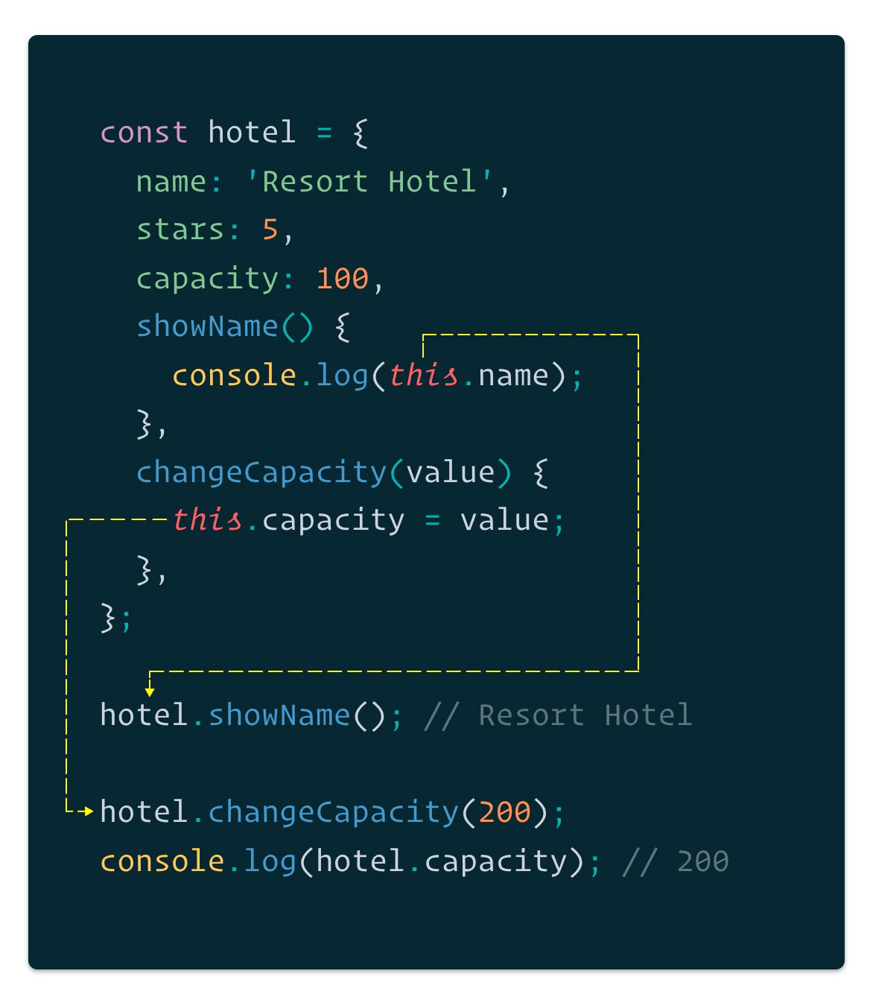

1. Вступ
При описі якоїсь сутності: користувача, гостя, продукту, необхідна структура
дозволяє зберігати всі характеристики докладно і в одному місці. В більшості мов
програмування для цього є типи даних Object (об'єкт).
З точки зору мови програмування, об'єкт - це набір властивостей і методів. З точки зору розробника об'єкт - це абстракція, що описує якісь дані і функції для обробки цих даних.
Які саме властивості (дані) і методи (функції обробки даних) повинні бути в об'єкті вирішується кожен раз з урахуванням конкретного завдання.
2. Створення об'єкта
Об'єкт — асоціативний масив, тип даних, який зберігає властивості (properties) і методи (methods).
Створення об'єкта через літерал схоже на створення масиву, тільки
використовуються фігурні {}, а не квадратні дужки.
const hotel = {};
При створенні об'єкт може бути ініціалізований властивостями, кожний з яких
описується парами ключ: значення (key: value). Властивості розділяються комою.
Ключ — це завжди рядок. Значним можуть бути будь-які типи: примітиви, масиви, об'єкти, булі, функції і т. п.
Правила іменування ключів прості:
- Якщо ключ укладений в лапки, то це може бути довільний рядок.
- Якщо лапок немає, то вступають обмеження - ім'я без пробілів, починаються на
букву або символи
_і$.
Наприклад, в програмі для туроператора знадобиться об'єкт, що описує готель: назва, рівень сервісу, місткість і т. п.
const hotel = {
name: 'Resort Hotel',
stars: 5,
capacity: 100,
};
3. Доступ до властивостей
Доступ до властивості об'єкта, для того, щоб отримати або привласнити йому значення, може бути записаний двома способами:
object.key- через крапку.object ["key"]- через квадратні дужки з ім'ям ключа в лапках.
На місце звернення буде повернуто значення властивості з таким ключем.
const hotel = {
name: 'Resort Hotel',
stars: 5,
capacity: 100,
};
console.log(hotel.name); // Resort Hotel
console.log(hotel['name']); // Resort Hotel
hotel.name = 'Coastline Resort';
console.log(hotel.name); // Coastline Resort
console.log(hotel['name']); // Coastline Resort
hotel['name'] = 'Stardust Hotel';
console.log(hotel.name); // Stardust Hotel
console.log(hotel['name']); // Stardust Hotel
Якщо під час запису значення по ключу, такого ключа в об'єкті немає, він буде створений.
const hotel = {
name: 'Resort Hotel',
stars: 5,
capacity: 100,
};
hotel.address = '1, Beach ave.';
hotel['manager'] = 'Chuck Norris';
console.log(hotel.address); // 1, Beach ave.
console.log(hotel.manager); // Chuck Norris
4. Видалення властивостей
Видалити властивість об'єкта можна за допомогою оператора delete. Видалення
властивостей - операція вкрай рідкісна, найчастіше властивості тільки додаються
або змінюються.
const hotel = {
name: 'Resort Hotel',
stars: 5,
capacity: 100,
};
delete hotel.name;
console.log(hotel); // {stars: 5, capacity: 100}
delete hotel['stars'];
console.log(hotel); // {capacity: 100}
5. Відсутні властивості
Відсутня властивість, при зверненні до нього по ключу, повертає undefined.
const hotel = {
name: 'Resort Hotel',
stars: 5,
guests: ['mango', 'poly', 'ajax'],
};
console.log(hotel.stars); // 5
console.log(hotel.pool); // undefined
6. Короткі властивості
Часто є змінні, наприклад, name і stars, і ми хочемо використовувати їх в
об'єкті так, щоб ім'я змінної стало ключем, а значення змінної значенням
властивості. При оголошенні об'єкта в цьому випадку досить вказати тільки ім'я
властивості, а значення буде взято зі змінної з аналогічним ім'ям. це синтаксис
коротких властивостей (shorthand properties).
let name = 'Resort Hotel';
let stars = 5;
// Цей ES5 запис надлишковий
const es5hotel = {
name: name,
stars: stars,
capacity: 100,
};
/*
* ES6 Shorthand properties
* Ім'я ключа буде аналогічно імені змінної
* Значення властивості буде дорівнювати значенню змінної
*/
const es6hotel = {
name,
stars,
capacity: 100,
};
console.log(es6hotel); // {name: "Resort Hotel", stars: 5, capacity: 100}
7. Обчислювані властивості
Іноді необхідно додати до об'єкта поле з ключем, значення якого ми заздалегідь не знаємо, він зберігається як значення змінної. Раніше для цього необхідно було спочатку створити об'єкт, а потім додавати властивості через квадратні дужки.
const key = 'person';
const object = {};
object[key] = 'Mango';
console.log(object); // {person: 'Mango'}
Використовуючи обчислювані властивості, можна уникнути зайвого коду, і в деяких випадках значно його спростити. Значенням обчислювальної властивості може бути будь-який валідний вираз.
const key = 'person';
const getKey = function () {
return 'age';
};
// Computed properties
const object = {
[key]: 'Mango',
[getKey()]: 2,
};
console.log(object); // {person: 'Mango', age: 2}
8. Методи об'єкта
Об'єкти зберігають не тільки дані, але і функції для роботи з цими даними. Якщо значення властивості це функція, то воно називається методом об'єкта.
const hotel = {
name: 'Resort Hotel',
stars: 5,
capacity: 100,
// Так метод оголошувався в ES5
greetInES5: function () {
console.log('Welcome!');
},
// Так метод оголошується в ES6
greetInES6() {
console.log('Welcome!');
},
};
hotel.greetInEs5(); // Welcome!
hotel.greetInEs6(); // Welcome!
Оскільки методи - це звичайні властивості, значення яких це функція, їх можна додавати або видаляти в будь-який момент.
const hotel = {
name: 'Resort Hotel',
stars: 5,
capacity: 100,
};
hotel.greet = function () {
console.log('Welcome!');
};
hotel.greet(); // Welcome!
8.1. Доступ до об'єкта через this
Методи використовуються для роботи з властивостями об'єкта, їх зміни. Для
доступу до поточного об'єкта, в методі використовується не ім'я об'єкта, а
ключове слово This - контекст. Значним this є об'єкт перед'крапкою', в
контексті якого викликаний метод.
const hotel = {
name: 'Resort Hotel',
stars: 5,
capacity: 100,
showName() {
console.log(this.name);
},
changeCapacity(value) {
this.capacity = value;
},
};
hotel.showName(); // Resort Hotel
hotel.changeCapacity(200);
console.log(hotel.capacity); // 200
Значення this визначається в момент виклику функції, а не в момент її
оголошення. Тобто під час виклику hotel.showName (), в this всередині
функції ShowName буде записане посилання на об'єктhotel.

Буде логічно замислитися - чому б не використовувати при зверненні до
властивостей ім'я об'єкта. Річ у тім, що ім'я об'єкта штука ненадійна, методи
одного об'єкта можна копіювати в інший (з іншим ім'ям), а в майбутньому ми
дізнаємося що часто при створенні об'єкта ми заздалегідь не знаємо імені.
Використання this гарантує, що функція працює саме з тим об'єктом, в контексті
якого викликана.
Ми детально розберемо ключове слово this і всі його
підводні камені в наступних модулях, а зараз досить просто використовувати
This при зверненні до властивості об'єкта в його методах.